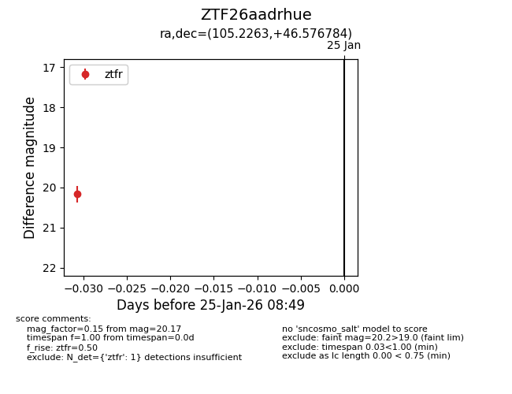
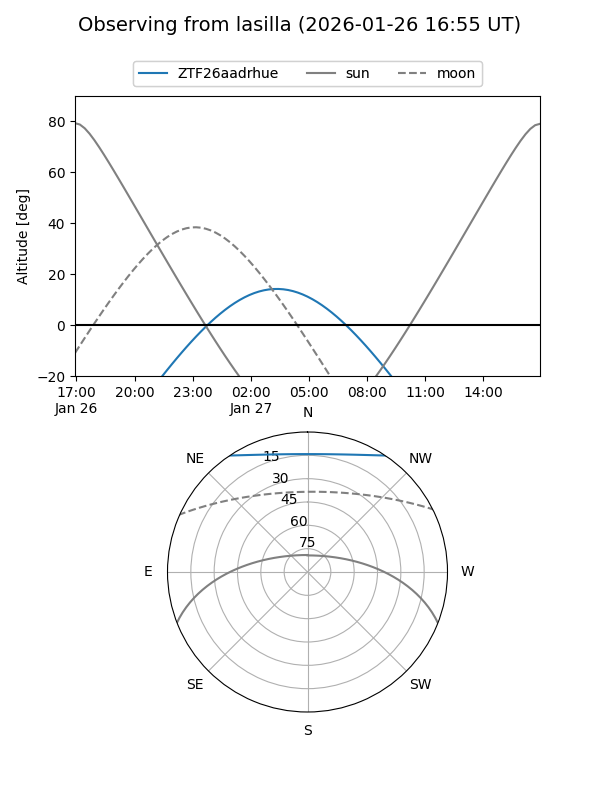
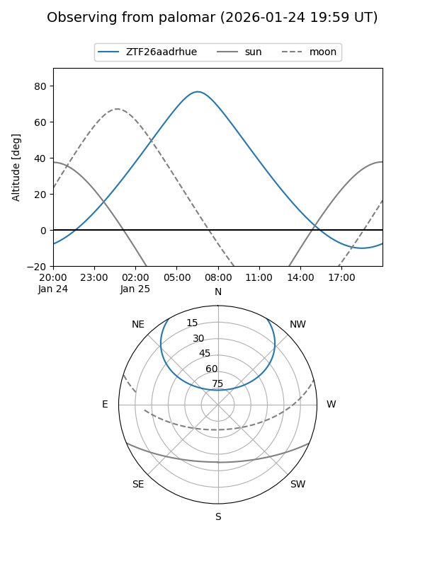

ZTF26aadrhue
Target ZTF26aadrhue at 2026-01-27 04:01
Aliases and brokers:
FINK: link
Lasair: link
ALeRCE: link
alt names
ZTF26aadrhue (ztf,fink_ztf)
Coordinates:
equatorial (ra, dec) = 105.2263,+46.57678
equatorial (HMS+DMS) = 07:00:54.32,+46:34:36.42
galactic (l, b) = (170.2457,+20.88195)
Flags:
Photometry:
last ztfg=19.79, ztfr=20.17
1 ztfg, 1 ztfr detections
Lightcurve

Visibility


Additional plots